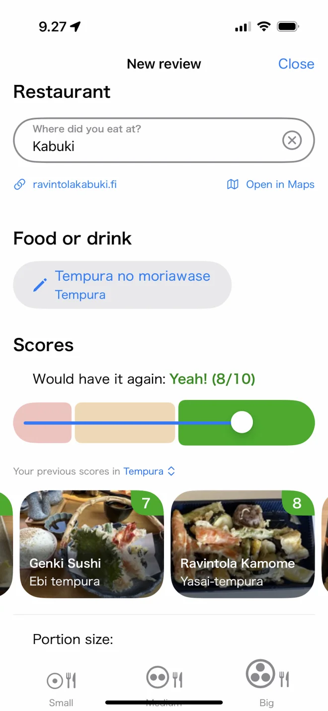
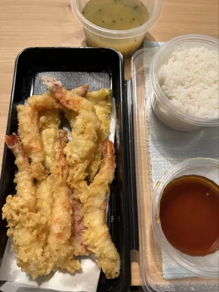
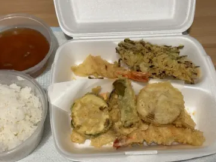
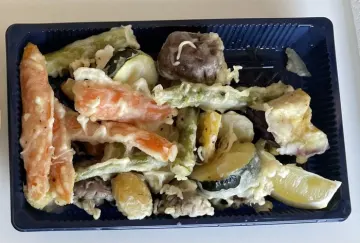
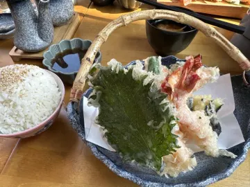
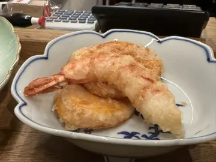
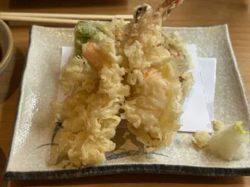

Miten arvioida ravintola-annoksia (ja muistaa aina, mitä tilata)
Tempura oli siellä tosi hyvää. Vai oliko se kadun toisella puolella? Useimmat meistä unohtavat muutamassa viikossa, mitkä annokset olivat loistavia. Ruokien arvioimisen tapa korjaa sen, kunhan se vie sekunteja eikä minuutteja.
Arvioi annos, älä ravintolaa

Ravintolan tähtiarvioissa on kaikki sekaisin: palvelu, sisustus, hinta, pitkä odotus. Ne eivät kerro, mitä tilata. Annosarviot kertovat. Samassa ravintolassa voi olla 9/10 ramen ja 4/10 katsudon, ja juuri sitä tietoa tarvitset seuraavalla kerralla.
Miksi useimmat ruokapäiväkirjat jäävät kesken
- Ne vievät liikaa aikaa. Muistiinpanojen kirjoittaminen pöydässä on kömpelöä, joten lopetat sen.
- Viiden tähden asteikko liukuu. Onko tämä 4 vai 5? Ilman vertailukohtaa pisteesi tarkoittavat eri päivinä eri asioita.
- Vertailu ei onnistu. Muistiinpanolista ei kerro, mikä kuudesta tempurasta oli paras.
Yhden kysymyksen järjestelmä
Savory Scores kysyy aterian jälkeen yhden kysymyksen: Tilaisitko sen uudestaan?
- En…: kerta riitti.
- Ehkä?: ihan hyvä, mutta ei syy palata.
- Joo!: tilaisin tämän uudestaan.
Siihen ehtii vastata, kun lautaset ovat vielä pöydässä, ja se on rehellisempi kuin tähtiarvio.
Savory Scoresin datasta
Esimerkki: tempurat Helsingissä arvioiden mukaan järjestettynä
| Kuva | Annos | Ravintola | Pisteet | Autenttisuus | Viimeksi arvioitu |
|---|---|---|---|---|---|
 | Tempura moriawase | Ravintola Domo | 9 | 9 | 12/2022 |
 | Tempura no moriawase | Restaurant Kabuki | 8 | 8 | 11/2023 |
 | Yasai-tempura | Ravintola Kamome | 8 | 10 | 6/2022 |
 | Ebi tempura | Genki SushiVantaa | 7 | 8 | 8/2024 |
 | Tempura (天ぷら) | Murasaki | 6 | 8 | 7/2025 |
 | Tempura no moriawase | Koto | 6 | 6 | 3/2025 |
Perustuu 6 arvioon 6 paikassa Helsingin seudulla, tilanne lokakuussa 2026. Pisteet ja autenttisuus ovat keskiarvoja kymmenen pisteen asteikolla. Useimmilla annoksilla on toistaiseksi vain yksi tai kaksi arviota ja ruokalistat muuttuvat, joten katso ajantasainen järjestys sovelluksesta. Söitkö paikassa, jonka pitäisi olla tällä listalla? Arvioi se Savory Scoresissa.
Näin arvioit annoksia Savory Scoresilla
- Napauta + ja valitse ravintola. Se linkittyy automaattisesti verkkosivuun ja karttaan.
- Valitse annos, kuten Tempura no moriawase. Se tallentuu ruokakategoriaansa (Tempura).
- Vastaa: En, Ehkä vai Joo. Valmista. Tai ohita, jos haluat vain kirjata annoksen.
- Hienosäädä halutessasi. Liukusäädin muuttaa vastauksesi pisteiksi asteikolla 1–10, ja aiemmat tempurapisteesi näkyvät heti alla, joten 8 tarkoittaa aina samaa.
- Lisää annoskoko (pieni, keskikokoinen tai iso), niin tiedät mitä odottaa ensi kerralla.
Muutaman aterian jälkeen saat oman top-listan jokaiseen kategoriaan, ja arviosi näkyvät, kun seuraavan kerran haet, joten et koskaan tilaa samaa En-annosta kahdesti.
Ei vain japanilaiselle ruoalle
Savory Scores on tehty Helsingin japanilaiselle ruoalle, mutta sama järjestelmä toimii mille tahansa keittiölle ja myös kaupan tuotteille. Katso japanilaiset ruokakaupat Helsingissä.
Löydä suosikkisi Helsingistä. Savory Scores on ilmainen iPhonelle ja iPadille: hae annosta, vertaa kaikkia kaupungin versioita ja arvioi se yhdellä napautuksella.